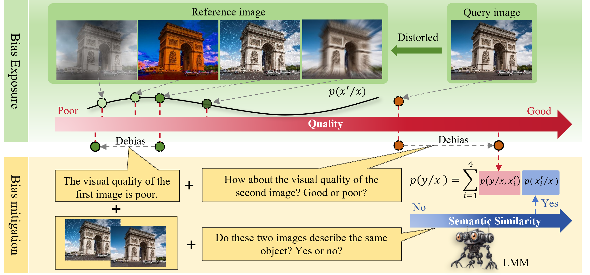

AAAI 2026 Best Poster Paper
Mitigating Perception Bias: A Training-Free Approach to Enhance LMM for Image Quality Assessment
We expose semantic bias in large multimodal models with controlled degradations, then use a training-free prompting scheme to make image-quality judgments more perceptually reliable.